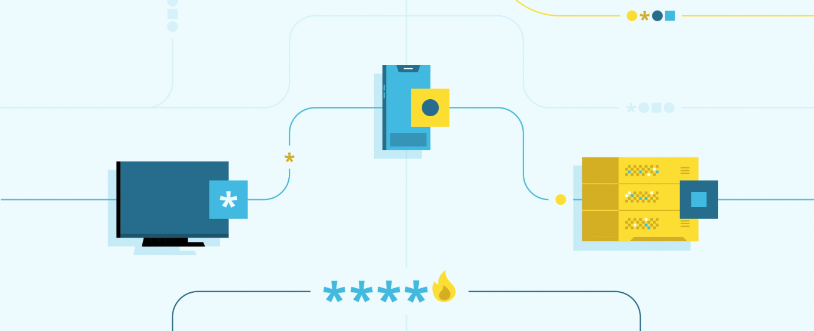
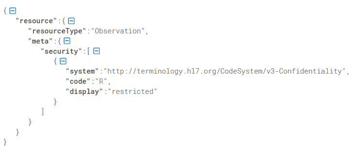
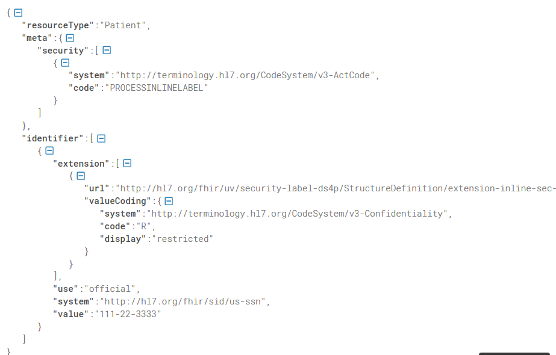
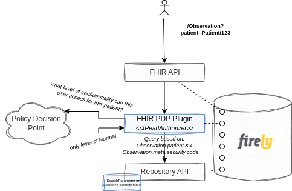
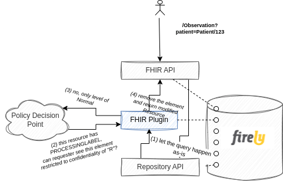
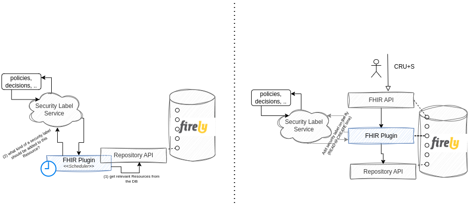
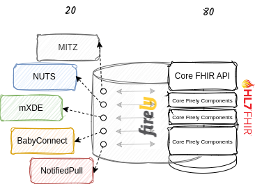

Introduction
Learning through practical experience is a great thing - even more so, when you can apply a real life scenario to it. Couple of days ago I stumbled upon this LinkedIn thread from Darren Devitt and Joost Holslag about the security labels and consequentially the FHIR Data Segmentation for Privacy (DS4P) Implementation Guide.
This is an implementation guide that is not out of the box supported by the Firely FHIR Server - nor can it be, as it's a matter of the whole infrastructure you have around it - so I gave myself a challenge to see how easy it would be to implement a small part of it in form of the Firely Server plugin. Simplifying of course the missing architecture components (Policy Decision Point, Security Labeling Orchestrator, ..).
Envisioned use case
Implementation Guide is really extensive, so for the PoC I've decided to implement a really simple use case - being able to enforce confidentiality security label both on the level of a Resource(.meta.security) as a whole as well as on specific elements of a Resource. This is, to say that a certain resource as a whole can be removed from the response if confidentiality label of it is not sufficient. Similarly, that a Resource is modified in a way that certain restricted elements are removed from it before returned in the response.

Resource.meta.security
inline security labelWriting the plugin
Firely server has a built-in mechanism for extending it's functionalities called "Plugins". There are several available off-the-shelf, such as SMART on FHIR, Subscription, Terminology, ..., but if you have more specific needs, implementation guides, national specifics or use cases you'd like supported, you can easily write your own.
The use case I've (purposefully) chosen for this PoC required me to write my own.
Applying restriction based on Resource.meta.security required me to do two things:
(1) add an additional search parameter (create a Conformance Resource called SearchParameter with expression ResourceType.meta.security, i.e. Observation.meta.security). This meant my instance of the FHIR Server now had support for searching based on this custom search parameter otherwise not specified by the core FHIR spec. Mind you this is completely acceptable practice of the FHIR implementation, as just like with the data model, search parameters too follow the 80/20 rule. No coding was required to achieve this - a new indexable search parameter available on the FHIR Server just like that.
(2) implement a custom IReadAuthorizer service (Firely Server library thing). Business logic of this custom implementation would then ask a Policy Decision Point (PDP) what level of confidentiality can this specific user access and add additional search parameter accordingly.
For example if an ophthalmologist goes for your Observations (/Observation?patient=Patient/123) and the PDP says that whoever is not your GP can only see resources with confidentiality code of "normal", the plugin will make sure an additional restriction (search parameter) is added when searching against the FHIR CDR. Consequentially, this specific query would result in a search based on the patient (as provided in the query) AND based on the Observation.meta.security (added by the plugin).
A couple lines of codes was all that was required to achieve this and with that, the Firely Server was able to enforce restrictions based on the resource's security label.

Inline Security Labels
Inline security labels require a bit different approach, since resource as a whole still needs to be returned and searched by, it just needs to be modified before it's returned to the consumer.
A plugin that modifies search parameters is therefore not sufficient. You want the CDR query to be done according to the received FHIR query and only then check if and what needs to be modified.
To avoid too much of a performance impact that would be introduced if you were to check every single Resource for all elements if they have an inline security label, you can rely on the PROCESSINLINELABEL tag that is specified by the DS4P IG.
Business logic would therefore be roughly like:
(1) process FHIR query as is
(2) check if a returned Resource has a PROCESSINLINELABEL meta security code.
(3) only those that do are checked for inline security labels and processed correctly (i.e. removed attributes that don't match the required level of confidentiality).

Adding security labels
Another important implementation of the IG is adding security labels. This can either be done outside of an actual transaction (offline, periodically), or on the fly. This is to invoke a Security Labeling Service (SLS) that determines and assigns labels to FHIR resources before they're stored to the CDR (or added on the resource before they're returned to the requester, but that delegates responsibility of properly handling it to the requester).
Either of those can be achieve with a Plugin - if you'd like to manage security labels periodically on all already stored resources within your CDR, you'd implement an Infrastructural plugin that would run scheduled jobs - ask a Security Labeling Service periodically to give you latest and greatest security label for a specific data point ( policies can change over time) and store it accordingly.
If you'd like to enrich resources with the proper labels on the fly, you'd just as simply add a plugin that would intercept the request, call the SLS and return enriched Resource to the requester.

20% of the 80/20 rule
Its extremely easy to modify the behavior of a Firely server and make use of the 80/20 rule that FHIR was built on. If you have a specific use case (BabyConnect? NotifiedPull?), national specifics (BgZ), additional frameworks (NUTS, MITZ) or just a wild idea completely individual to you, creating a custom plugin and adding it to your process is a really simple thing to do. And if you're ever stuck, the beauty of the open source community really comes to life - FHIR as it is and Firely .NET SDK out of which Firely Server is comprised of.
